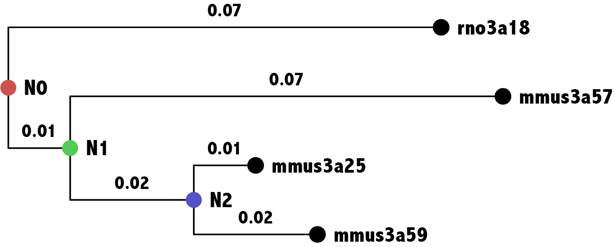
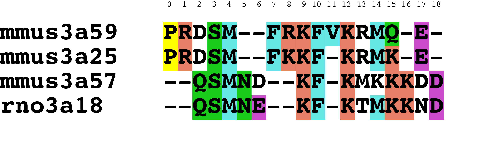
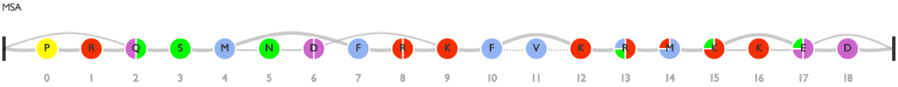
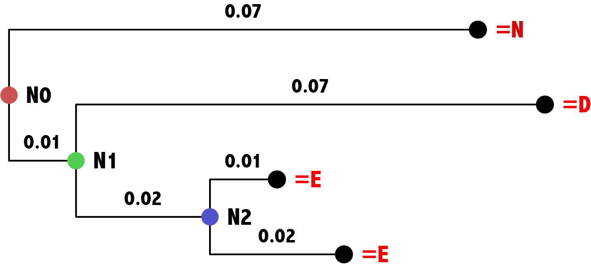
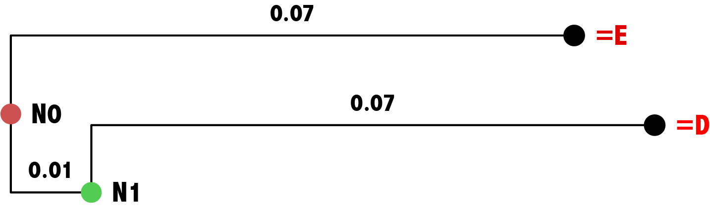
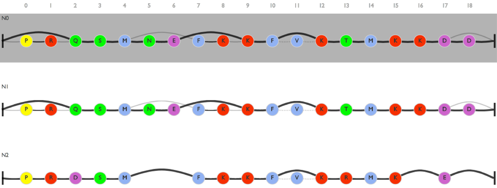

GRASP uses the principle of maximum likelihood to infer ancestral character states from a set of extant sequences \(S\), with their evolutionary relationships described by a phylogenetic tree \(T^*\) and an evolutionary model. Each extant sequence is a series of observed character states, arranged so that homologous sections are distinguished. The input to a reconstruction tool typically takes the form of a multiple sequence alignment which highlights homology, and a phylogenetic tree, with one leaf branchPoint for each sequence. There is an assortment of evolutionary models, but this is usually a less emphasized, secondary consideration.
It is important to note that a phylogenetic tree represents the trace of (substitutions between) character states for homologous positions. There is a distinct possibility that some extant sequences miss an observable character state; this is marked by a gap character in a multiple sequence alignment, and is explained by either a deletion of that character at a preceding point in time subsequent to an ancestor, or by an insertion exclusive to other extant sequences subsequent to their last common ancestor.
GRASP deals with this in two steps:
The upshot of the first step above is that each leaf branchPoint in character trace trees is always assigned a character state that originate from a shared ancestor. We assume that inference of ancestral character states can proceed for each position \(v\) independently; hence, we only need to consider substitution events between the branchPoints in \(T_v\), over the time durations attached to each branchPoint-to-branchPoint branch.
Each character trace tree \(T_v\) is a probabilistic graphical model that specifies a set of branchPoints and directed edges between them. Nodes have a one-to-one relationship with random variables. A sub-set of random variables \(X_1, X_2, ..., X_{|S_v|}\) represent the character state of all sequences \(S_v \subseteq S\) that have an observable state for position \(v\), and another sub-set \(Y_1, Y_2, ..., Y_{|S_v|-1}\) represent the states in ancestral sequences; \(Y_{|S_v|-1}\) is a special case in that it represents the root of the tree. For both observable and ancestral variables the index uniquely corresponds to a leaf branchPoint or a parent branchPoint in \(T_v\), respectively.
To complete the definition of the probabilistic graphical model based on \(T_v\), we define a function that identifies the edges of the graph. \(pa_v\) returns the parent variable of the variable in its argument. (\(Y_{|S_v|-1}\) is a special case, which we deal with separately below.) Additionally, we define a function \(ti_v\) that for any variable in its argument returns the time of evolution associated with the branch between it and its parent in \(T_v\).
With the exception of the root, all branchPoints in the probabilistic graphical model is a conditional probability \( P(X_i|pa_v(X_i),ti_v(X_i)) \) or \( P(Y_j|pa_v(Y_j),ti_v(Y_j)) \), for \(i \in \{1, 2, ..., |S_v|\}\) and \(j \in \{1, 2, ..., |S_v|-2\}\); each conditional probability is determined by the distances on the branches in \(T_v\) pointing to the observed sequence \(i\) or ancestral sequence \(j\), respectively, from its closest ancestor. The matrix of conditional probabilities is \(e^{Q(t)}\) where \(Q\) is the instantaneous rate matrix given by the evolutionary model, and \(t\) is the time of evolution.
Finally, the root of the tree is a probability \( P(Y_{|S_v|-1}) \) The probability distribution is the base frequencies of character states \(F\) given by the evolutionary model.
Inference of the joint ancestral state is then defined by \[ P(Y_1, Y_2, ..., Y_{|S_v|-1}|X_1, X_2, ..., X_{|S_v|}) \propto \nonumber \prod_i P(X_i | pa_v(X_i), ti_v(X_i)) \prod_j P(Y_j | pa_v(Y_j), ti_v(Y_j)) P(Y_{|S_v|-1}) \]
GRASP's implementation uses variable elimination, which decomposes the inference into an efficient series of products given the hierarchical topology of the tree; it determines the ancestral state across all non-observed variables with the highest joint probability. From the above, GRASP is also capable of inferring the marginal probability distribution at a given branchPoint \(k \in \{1, 2, ..., |S_v|-1\}\) by summing out all other non-observed variables.
All inferences in GRASP are exact (not approximated).
The base frequencies (transposed) for Le and Gasquel (LG) are \[ \begin{matrix} A & R & N & D & C & Q & E & G & H & I & L & K & M & F & P & S & T & W & Y & V \\ 0.079 & 0.056 & 0.042 & 0.053 & 0.013 & 0.041 & 0.072 & 0.057 & 0.022 & 0.062 & 0.099 & 0.065 & 0.023 & 0.042 & 0.044 & 0.062 & 0.053 & 0.012 & 0.034 & 0.069 \end{matrix} \] The rate matrix for the same model is \[ \begin{matrix} & A & R & N & D & C & Q & E & G & H & I & L & K & M & F & P & S & T & W & Y & V \\ A & -1.09 & 0.02 & 0.01 & 0.02 & 0.03 & 0.04 & 0.07 & 0.12 & 0.01 & 0.01 & 0.04 & 0.03 & 0.03 & 0.01 & 0.05 & 0.29 & 0.11 & 0.00 & 0.01 & 0.18 \\ R & 0.03 & -0.88 & 0.03 & 0.01 & 0.01 & 0.11 & 0.03 & 0.02 & 0.05 & 0.01 & 0.03 & 0.41 & 0.01 & 0.00 & 0.01 & 0.05 & 0.03 & 0.01 & 0.01 & 0.01 \\ N & 0.02 & 0.04 & -1.19 & 0.27 & 0.01 & 0.07 & 0.04 & 0.08 & 0.10 & 0.01 & 0.01 & 0.14 & 0.01 & 0.00 & 0.01 & 0.25 & 0.11 & 0.00 & 0.02 & 0.01 \\ D & 0.03 & 0.01 & 0.21 & -0.86 & 0.00 & 0.02 & 0.38 & 0.05 & 0.02 & 0.00 & 0.00 & 0.02 & 0.00 & 0.00 & 0.02 & 0.08 & 0.02 & 0.00 & 0.00 & 0.00 \\ C & 0.20 & 0.03 & 0.02 & 0.00 & -0.87 & 0.00 & 0.00 & 0.03 & 0.01 & 0.02 & 0.06 & 0.00 & 0.02 & 0.05 & 0.00 & 0.17 & 0.06 & 0.01 & 0.04 & 0.14 \\ Q & 0.08 & 0.16 & 0.07 & 0.03 & 0.00 & -1.25 & 0.30 & 0.02 & 0.11 & 0.00 & 0.06 & 0.21 & 0.04 & 0.00 & 0.03 & 0.07 & 0.06 & 0.00 & 0.01 & 0.01 \\ E & 0.08 & 0.02 & 0.02 & 0.28 & 0.00 & 0.17 & -0.84 & 0.02 & 0.01 & 0.00 & 0.01 & 0.12 & 0.00 & 0.00 & 0.02 & 0.04 & 0.03 & 0.00 & 0.00 & 0.02 \\ G & 0.16 & 0.02 & 0.06 & 0.04 & 0.01 & 0.01 & 0.02 & -0.50 & 0.01 & 0.00 & 0.00 & 0.02 & 0.00 & 0.00 & 0.01 & 0.11 & 0.01 & 0.00 & 0.00 & 0.01 \\ H & 0.03 & 0.14 & 0.19 & 0.05 & 0.01 & 0.20 & 0.03 & 0.02 & -1.09 & 0.01 & 0.04 & 0.05 & 0.01 & 0.03 & 0.02 & 0.06 & 0.03 & 0.01 & 0.18 & 0.01 \\ I & 0.01 & 0.01 & 0.01 & 0.00 & 0.00 & 0.00 & 0.00 & 0.00 & 0.00 & -1.41 & 0.41 & 0.01 & 0.10 & 0.05 & 0.00 & 0.00 & 0.06 & 0.00 & 0.01 & 0.74 \\ L & 0.03 & 0.02 & 0.00 & 0.00 & 0.01 & 0.02 & 0.00 & 0.00 & 0.01 & 0.26 & -0.79 & 0.01 & 0.14 & 0.11 & 0.01 & 0.01 & 0.02 & 0.01 & 0.01 & 0.12 \\ K & 0.04 & 0.35 & 0.09 & 0.02 & 0.00 & 0.13 & 0.13 & 0.02 & 0.02 & 0.01 & 0.01 & -0.98 & 0.02 & 0.00 & 0.02 & 0.05 & 0.06 & 0.00 & 0.00 & 0.01 \\ M & 0.09 & 0.03 & 0.02 & 0.00 & 0.01 & 0.07 & 0.01 & 0.01 & 0.01 & 0.27 & 0.63 & 0.04 & -1.54 & 0.08 & 0.00 & 0.02 & 0.11 & 0.01 & 0.02 & 0.13 \\ F & 0.02 & 0.00 & 0.00 & 0.00 & 0.01 & 0.00 & 0.00 & 0.01 & 0.02 & 0.07 & 0.26 & 0.00 & 0.04 & -0.81 & 0.00 & 0.02 & 0.01 & 0.03 & 0.27 & 0.05 \\ P & 0.09 & 0.02 & 0.01 & 0.02 & 0.00 & 0.03 & 0.03 & 0.01 & 0.01 & 0.00 & 0.02 & 0.03 & 0.00 & 0.00 & -0.42 & 0.08 & 0.03 & 0.00 & 0.00 & 0.02 \\ S & 0.37 & 0.05 & 0.17 & 0.07 & 0.04 & 0.05 & 0.04 & 0.10 & 0.02 & 0.00 & 0.02 & 0.05 & 0.01 & 0.02 & 0.06 & -1.43 & 0.34 & 0.00 & 0.01 & 0.01 \\ T & 0.17 & 0.03 & 0.08 & 0.02 & 0.01 & 0.04 & 0.04 & 0.01 & 0.01 & 0.06 & 0.03 & 0.07 & 0.05 & 0.01 & 0.03 & 0.40 & -1.23 & 0.00 & 0.01 & 0.15 \\ W & 0.01 & 0.03 & 0.00 & 0.00 & 0.01 & 0.01 & 0.01 & 0.02 & 0.01 & 0.01 & 0.06 & 0.00 & 0.02 & 0.10 & 0.00 & 0.02 & 0.01 & -0.44 & 0.11 & 0.01 \\ Y & 0.02 & 0.02 & 0.03 & 0.01 & 0.02 & 0.01 & 0.01 & 0.00 & 0.12 & 0.01 & 0.03 & 0.01 & 0.01 & 0.33 & 0.00 & 0.02 & 0.01 & 0.04 & -0.71 & 0.02 \\ V & 0.20 & 0.01 & 0.00 & 0.00 & 0.03 & 0.01 & 0.02 & 0.00 & 0.00 & 0.66 & 0.17 & 0.01 & 0.04 & 0.03 & 0.01 & 0.01 & 0.12 & 0.00 & 0.01 & -1.34 \end{matrix} \] Read as row = source of substitution, column = target of substitution.
We use matrix exponentiation to determine the substitution probability matrix when \(t=0.1\). This contains all possible substitution probabilities \(P(X=column|Y=row,t=0.1)\). \[ \begin{matrix} & A & R & N & D & C & Q & E & ... \\ A & 0.898 & 0.002 & 0.001 & 0.002 & 0.003 & 0.004 & 0.007 & ... \\ R & 0.003 & 0.916 & 0.003 & 0.001 & 0.001 & 0.011 & 0.003 & ... \\ N & 0.003 & 0.004 & 0.889 & 0.025 & 0.001 & 0.006 & 0.004 & ... \\ D & 0.003 & 0.001 & 0.019 & 0.918 & 0.000 & 0.002 & 0.035 & ... \\ C & 0.018 & 0.003 & 0.002 & 0.000 & 0.917 & 0.000 & 0.000 & ... \\ Q & 0.007 & 0.015 & 0.007 & 0.003 & 0.000 & 0.883 & 0.027 & ... \\ E & 0.008 & 0.002 & 0.002 & 0.026 & 0.000 & 0.015 & 0.920 & ... \\ ... & ... \\ \end{matrix} \]
Same operation applies to determine the substitution probabilities for \(t=0.01\). \[ \begin{matrix} & A & R & N & D & C & Q & E & ... \\ A & 0.989 & 0.000 & 0.000 & 0.000 & 0.000 & 0.000 & 0.001 & ... \\ R & 0.001 & 0.990 & 0.000 & 0.000 & 0.000 & 0.001 & 0.000 & ... \\ N & 0.000 & 0.000 & 0.986 & 0.003 & 0.000 & 0.001 & 0.001 & ... \\ D & 0.001 & 0.000 & 0.002 & 0.990 & 0.000 & 0.000 & 0.004 & ... \\ C & 0.001 & 0.000 & 0.000 & 0.000 & 0.995 & 0.000 & 0.000 & ... \\ Q & 0.001 & 0.001 & 0.001 & 0.000 & 0.000 & 0.986 & 0.003 & ... \\ E & 0.001 & 0.000 & 0.000 & 0.004 & 0.000 & 0.002 & 0.988 & ... \\ ... & ... \\ \end{matrix} \]
Here's a worked example. Below is a phylogenetic tree with four extant sequences; the tree shows how they are related via three ancestors. The evolutionary distances (in time) are indicated on the branches.

The sequences are provided in the form of a multiple sequence alignment, which we will refer to below; each column corresponds to an index 0-18.

As an aside, internally GRASP maps the multiple sequence alignment to a partial order alignment graph (POAG). There are a few alignment programs that operate on and produce this data structure directly; GRASP is able to do this too if the user provides the sequences un-aligned.

We can determine a character trace tree for each index based on the original phylogenetic tree. This involves determining which of the branchPoints that is the root branchPoint and which branchPoints that terminate the tree. As indicated earlier, this is a separate optimisation problem that GRASP performs using a variant of maximum parsimony. We do not discuss it here. Below we show the resulting character trace tree for index 17. This is identical to the original phylogenetic tree because there should be a character state at the ultimate ancestor and there are no deletion events that would remove that position in any of the extant sequences. Note that we have not yet assigned character states to the ancestral branchPoints--that is the problem we are going to look at next.

Here is the character trace tree for index 6.

Ancestral sequence reconstruction typically operates independently on each index. Let's first look at index 6.
The trace tree for index 6 is a probabilistic graphical model with four variables: \(N0, N1, rno3a18, mmus3a57\), two of which are instantiated \(rno3a18={\tt E}, mmus3a57={\tt D}\). The key expression we wish to evaluate is \[ P(N0, N1 | rno3a18={\tt E}, mmus3a57={\tt D}) \propto \nonumber \\ P(N0) \cdot \\ P(N1 | N0, t=0.01) \cdot \\ P(rno3a18={\tt E} | N0, t=0.07) \cdot \\ P(mmus3a57={\tt D} | N1, t=0.07) \] To determine the most probable instantiation of \(N0\) and \(N1\), we can simply record the result of the above expression for each. This will require us to lookup each substitution probability as determined by the model for a specified evolutionary distance (in time). Substitution matrices for a few relevant time points are provided at the end of this page--please use them to manually gauge the probabilities of ancestral states. \[ P(N0={\tt A}, N1={\tt A} | rno3a18={\tt E}, mmus3a57={\tt D}) \propto 0.079 \cdot 0.989 \cdot 0.005 \cdot 0.001 \approx 0.000 \\ ... \\ P(N0={\tt D}, N1={\tt D} | a18={\tt E}, a57={\tt D}) = 0.00122945\\ P(N0={\tt D}, N1={\tt E} | a18={\tt E}, a57={\tt D}) = 0.00000009\\ P(N0={\tt E}, N1={\tt D} | a18={\tt E}, a57={\tt D}) = 0.00017545\\ P(N0={\tt E}, N1={\tt E} | a18={\tt E}, a57={\tt D}) = 0.00123152\\ \] Almost all products are very close to zero; we can optionally normalise so that each possibility sums to 1, to make them probabilities. (This is optional, since we are primarily interested in the combination with the greatest product.)
Of all \(20 \cdot 20 = 20^2 = 400 \) possibilities, intuitively those involving the character states \(\tt E\) and \(\tt D\) would be in contention. \[ P(N0={\tt E}, N1={\tt E} | a18={\tt E}, a57={\tt D}) = 0.466\\ P(N0={\tt E}, N1={\tt D} | a18={\tt E}, a57={\tt D}) = 0.066\\ P(N0={\tt D}, N1={\tt E} | a18={\tt E}, a57={\tt D}) = 0.000\\ P(N0={\tt D}, N1={\tt D} | a18={\tt E}, a57={\tt D}) = 0.465\\ \]
Imagine for a moment if \(t=0.1\) on the branch between N0 and N1, i.e. replace with \(P(N1 | N0, t=0.1)\); with a longer duration between the evolutionary events there is more opportunity for mutations to occur and the ancestral states will reflect that. \[ P(N0={\tt E}, N1={\tt E} | a18={\tt E}, a57={\tt D}) = 0.290\\ P(N0={\tt E}, N1={\tt D} | a18={\tt E}, a57={\tt D}) = 0.414\\ P(N0={\tt D}, N1={\tt E} | a18={\tt E}, a57={\tt D}) = 0.000\\ P(N0={\tt D}, N1={\tt D} | a18={\tt E}, a57={\tt D}) = 0.289\\ \]
The trace tree for index 17 is a little messier since we now have seven variables: \(N0, N1, N2, rno3a18, mmus3a57, mmus3a26, mmus3a59\), four of which are instantiated \(rno3a18={\tt N}, mmus3a57={\tt D}, mmus3a25={\tt E}, mmus3a59={\tt E}\). The key expression we wish to evaluate is \[ P(N0, N1, N2 | rno3a18={\tt N}, mmus3a57={\tt D}, mmus3a25={\tt E}, mmus3a59={\tt E}) \propto \nonumber \\ P(N0)\\ P(N1 | N0, t=0.01) \cdot \\ P(rno3a18={\tt N} | N0, t=0.07) \cdot \\ P(mmus3a57={\tt D} | N1, t=0.07) \cdot \\ P(N2 | N1, t=0.02) \cdot \\ P(mmus3a25={\tt E} | N2, t=0.01) \cdot \\ P(mmus3a59={\tt E} | N2, t=0.02) \] For index 17 we are after the most probable instantiation of \(N0\), \(N1\) and \(N2\); that means, \(20 \cdot 20 \cdot 20 = 20^3 = 8000\) combinations. Again we can loop through all of them, look up substitution probabilities, and perform the product.
We have only discussed what defines the most probable joint state in theory. In practice, there are a number of considerations that will influence the time and space complexity. bnkit is a Bayesian network modelling framework written in Java which is used by GRASP. If you are interested in understanding how it can be used to perform character state inference, the example above is coded in the package bn.ctmc.SubstNode.
Once inference has been done for each character trace tree, assigning a character state to each ancestral branchPoint, GRASP pieces all of them together to form the following POAGs for the ancestral branchPoints \(N0, N1\) and \(N2\), respectively. In the process (record keeping on the grand scale) it is possible to distinguish between edges of a couple of different types, highlighted in the colour below. Dark grey means that bi-directional edge parsimony (described elsewhere) has deemed the edge to be fully optimal. The user can select a single, consensus path through the POAG, which is displayed with a thicker outline.
